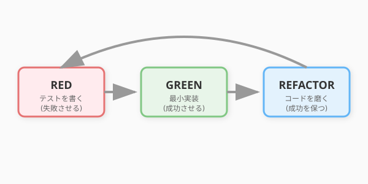

ここまで、テストの全体像（4.1節）とテスト設計の技法（4.2節）を学びました。しかし、これらはいずれも「コードを書いた後にテストを書く」という前提に立っています。
テスト駆動開発（TDD: Test-Driven Development）は、この順序を逆転させます。まずテストを書き、そのテストを通すためにコードを書く。この単純な逆転が、開発のリズムと品質を劇的に変えます。
TDDの生みの親であるKent Beckはこう述べています。「テストを先に書くことで、設計について考えることを強制される」と。テストは検証の道具であるだけでなく、設計を駆動するエンジンでもあるのです。
TDDは、3つのフェーズを短いサイクルで繰り返します。

まだ実装のない状態で、「こう動いてほしい」というテストを書きます。実行すると当然失敗します（赤）。
# Red: まずテストを書く
class TestCompleteQuest(unittest.TestCase):
def test_completing_quest_changes_status(self):
quest = Quest(title="Goblin Hunt", difficulty="NORMAL",
base_xp=50, recommended_level=1)
quest.complete()
self.assertEqual(quest.status, "COMPLETED")この時点では Quest.complete() メソッドは存在しません。テストは AttributeError で失敗します。
テストを通すために、最小限のコードを書きます。美しさは後回し。まずは動くことが最優先です。
# Green: テストを通す最小限の実装
class Quest:
def __init__(self, title: str, difficulty: str, base_xp: int,
recommended_level: int):
self.title = title
self.difficulty = difficulty
self.base_xp = base_xp
self.recommended_level = recommended_level
self.status = "AVAILABLE"
def complete(self):
self.status = "COMPLETED"テストが通ります（緑）。
テストという安全網があるので、安心してコードを磨けます。第5章で学ぶリファクタリングの技法が、ここで活きます。
# Refactor: ガード節を追加して堅牢にする
class Quest:
# ...
def complete(self):
if self.status != "AVAILABLE":
raise InvalidQuestStateError(
f"Cannot complete quest in '{self.status}' state"
)
self.status = "COMPLETED"リファクタリング後もテストが緑であることを確認します。壊れていればすぐに気づけます。
より実践的な例として、「クエストを完了し、経験値を付与する」ユースケースをTDDで段階的に構築してみましょう。
# Red
def test_completing_quest_changes_status_to_completed(self):
quest = Quest("Herb Gathering", "NORMAL", base_xp=30, recommended_level=1)
quest.complete()
self.assertEqual(quest.status, "COMPLETED")
# Green → 上記の実装で通る# Red
def test_cannot_complete_already_completed_quest(self):
quest = Quest("Herb Gathering", "NORMAL", base_xp=30, recommended_level=1)
quest.complete()
with self.assertRaises(InvalidQuestStateError):
quest.complete() # 2回目は失敗するはず
# Green → ガード節を追加（上のRefactorで実装済み）# Red
def test_completing_quest_returns_xp_reward(self):
quest = Quest("Dragon Slayer", "HARD", base_xp=100, recommended_level=10)
hero = Hero("Aria", level=5)
result = quest.complete_with_reward(hero)
self.assertEqual(result.xp_gained, 200) # HARD + 低レベル → 2倍
# Green
class Quest:
def complete_with_reward(self, hero: Hero) -> CompletionResult:
if self.status != "AVAILABLE":
raise InvalidQuestStateError(...)
self.status = "COMPLETED"
xp = calculate_quest_xp(self, hero)
hero.gain_xp(xp)
return CompletionResult(quest=self, xp_gained=xp)このように、小さなテストを一つずつ追加しながら、実装を漸進的に成長させていくのがTDDのリズムです。
テストを先に書くと、「このクラスを外部からどう使いたいか」を最初に考えることになります。つまり、TDDはインターフェース設計を強制する仕組みです。
第5章との関係が明確になります。TDDの3番目のフェーズ「Refactor」は、テストという安全網があるからこそ安心して行えるのです。第5章で学ぶリファクタリングにおいて「テストが不可欠」である理由が、ここで具体的に体験できます。
TDDはすべての場面に適するわけではありません。
| 場面 | TDDの効果 |
|---|---|
| ドメインロジック（計算、ルール） | 高い。入出力が明確でテストしやすい |
| アルゴリズム実装 | 高い。段階的に正しさを確認できる |
| UIレイアウト | 低い。見た目の正解は数値で表現しにくい |
| プロトタイピング | 低い。仕様が固まっていない段階では足かせになりうる |
| 外部APIとの連携 | 中程度。テストダブルとの組み合わせで可能 |
QuestForgeのようなドメインロジック中心のアプリケーションは、TDDの威力が最も発揮される領域です。
QuestForgeに「パーティ編成」機能を TDD で実装してください。
仕様：
- パーティは最大4人
- 同じ英雄を重複して追加できない
- パーティリーダーは最もレベルの高い英雄が自動的に選ばれる
進め方（Red-Green-Refactor を順守）：
1. Red: 失敗するテストを1つ書く
2. Green: そのテストだけをパスさせる最小限の実装を書く
3. Refactor: domain/ の既存クラスと整合性を保ちながら整理する
4. 1〜3 を繰り返し、すべての仕様をカバーする
各ステップで「テストコード」と「実装コード」を分けて提示してください。domain/quest.py と tests/unit/test_quest.py を読んで、
TDD の観点から「次に書くべきテストケース」を3つ提案してください。
選定基準：
- 現在のテストでカバーされていない振る舞い
- バグが潜みやすい境界条件
- 仕様変更時にリグレッションを検知できるケース
各提案に、テストコードと「なぜこのテストが重要か」の説明を添えてください。執筆メモ: